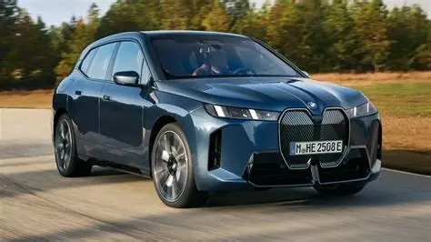

A BMW alapítása
A BMW (Bayerische Motoren Werke) 1916-ban alakult Németországban. Kezdetben repülőgép-motorokat gyártott, majd később motorkerékpárokat és autókat is készített. A márka világszerte híres lett a sportos és prémium kategóriás autóiról.


A BMW napjainkban
Ma a BMW az egyik legismertebb autómárka a világon. Luxusautókat, elektromos járműveket és sportmodelleket gyárt. Az innováció és a modern technológia fontos szerepet játszik a vállalat fejlődésében.
Vissza a kezdőlapra